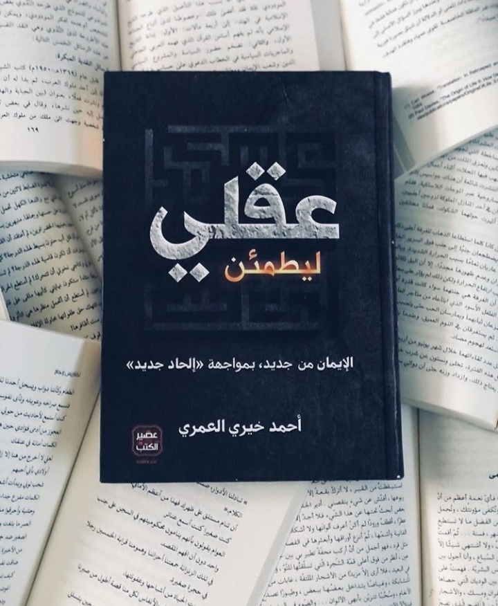

welcome to My books store,
bring your coffee and enjoy the shopping
Novels And Stories

| د.احمد خيري العمري | الكاتب |
| 650 | الصفحات |
| 4000DA | ثمن |
| 28 | الكمية |
| عصير الكتب | دار النشر |
| الكتاب ليس موجها للملحدين.
على الأقل ليس للملحدين الذين حسموا أمرهم بالإلحاد دون أي أسئلة إضافية أو مزيدا من البحث.
وهو أيضا ليس للمؤمنين الذين يعتقدون أنهم يملكون كل الأجوبة " النموذجية" التي لا تحتاج لتحديث أو تحوير...
ولا للمؤمنين الذين يعتقدون أن لا أسئلة هناك أصلا.
باختصار: هو ليس للمطمئنين عموما، من الجانبين النقيضين.
لا لِمَنْ اطمأن إلى أن إلحاده هو الوضع الصحيح، ولا لِمَنْ اطمأن إلى إيمانه وثباته وعدم حاجته إلى حصانة " عقلية" من نوع ما.
لا يستوي هذان النقيضان بالتأكيد، والثاني منهما " نغبطه" على ما هو فيه..
لكن هذا لن يغير من حقيقة أن الكتاب ليس موجها له أيضا... | عن الكتاب |
| د..احمد خيري العمري |
| 380 |
| 2000DA |
| 32 |
| عصير الكتب |
| الرواية توضح الصورة البشعة للعنصرية و مفهومها فهي تبين لك أهمية أن تكون صاحب مبدأ ...أن تحارب من أجل أن تترك أثرا ...أن لا تذهب دون أن يذكرك ...أن تحارب حتى تنتصر ...معنى الحب وماهو الحب ...و من هم جديرون بأن نحبهم |
| د. أدهم الشرقاوي |
| 338 |
| 1500DA |
| 22 |
| عصير الكتب |
| الرواية في غاية الروعة وتكمن روعتها في النقاشات التي تدور بين هشام وماهر وكريم ووعد. كريم شاب في السنة الاخيره من الجامعه كل يوم يذهب إلى الجامعه عن طريق الحافله ويجلس بجانب فتاة اسمها وعد ويحادثها بأفكاره. الأفكار عباره عن محاورات ثقافيه جميله جدا ومتنوعه شيء يتحدث عن الحب وشيء عن الراسمالية وشيء عن البلاء وعن الالحاد. والميزة فيها البساطة التي استخدمها الكاتب والتي سهلت وصول الافكار للعقل قم للقلب رغم تعقديها حقيقة. |
| د.مارك مانسون |
| 271 |
| 1200DA |
| 26 |
| دار التنوير |
| فن اللامبالاة لعيش حياة تخالف المألوف هو كتاب رائع في التنمية البشرية للمؤلف العالمي الشهير مارك مانسون والذي يتحدّث فيهِ على أنّ الإنسان لا يجب بالضرورة أن يكونَ إيجابيّاً طوال الوقت، وأنّ المفتاح إلى بشر أكثر قوة وسعادة كامن في التعامل مع الشدائد تعاملاً أفضل، فيما يلي تلخيص كتاب فن اللامبالاة. |
| د. خولة حمدي |
| 385 |
| 1600DA |
| 46 |
| دار الكيان |
| وقصة الرواية بحسب الكاتبة تنقل بحيادية قصة حقيقية لأبطال حقيقيين (ريما المسلمة وجاكوب اليهودي الذي تبنّاها بعد وفاة والدتها، وزوجته تانيا، وولداهما سارا وباسكال، وكذلك ندى اليهودية وأخوها المسيحي وبقية عائلتها، أحمد المسلم المقاوم اللبناني وأخته سماح، وصديقه المقرّب حسان، الذي خطب ندى بعد اختفاء أحمد، سونيا وابنتها دانة، راشيل وزوجها سيئ الأخلاق، وغيرهم كثر)، ولكن ما لبثت أن تخلت الكاتبة عن حياديتها، وبدأت تعرض أدلة لإقناع القارئ بدينها، حتى لو كانت قصصًا لإسلام أشخاص على أيدي أبطال روايتها. |
| د. أدهم الشرقاوي |
| 288 |
| 700DA |
| 18 |
| عصير الكتب |
| هي أرض أهلها يتعامل بوحدات الذكاء، فأنت تعمل ولا يتم محاسبتك نقدًا بل تزيد وحدات الذكاء عندك وإذا ما اشتريت شيئًا فإنها تنقص من ذكاءك بطل هذه الرواية هو خالد شاب ذو 28 عاما من قرية البهوفريك يتقدم لخطبة فتاة للمرة الثامنة ويقبل بالرفض من والدها بداعي أنه يريد لابنته شابا غير عادي، يحاول بعدها خالد القيام بشيء يتسنى له من خلاله الوصول لشيء يرضي باله. يقرر القيام برحلة في سرداب فوريك المتواجد بالقرية ذلك السرداب الذي تحوم حوله إشاعات وحقائق عديدة، |
| l'auteur | guillaume MUSSO |
| N° | 425 |
| prix | 1600DA |
| quantité | 33 |
| l'édition | |
| résumé | Layla, 5 ans disparaît dans un centre commercial alors qu'elle est sous la surveillance de sa nounou. Sa mère, Nicole (violoniste mystérieuse) et son père, Mark (célèbre psychologue), sont frappés de plein fouet par ce drame. Ils réagissent tous deux de façon totalement différente. En effet, Nicole parvient à refaire surface malgré la souffrance, essayant de se projeter dans l'avenir, tandis que Mark sombre et se renferme face à la détresse qui l'envahit. Sa vie s'est arrêtée au moment de cette disparition. |
| guillaume MUSSO |
| 507 |
| 2200DA |
| 40 |
| À huit ans, Nathan s’est noyé en plongeant dans un lac pour sauver une fillette. Arrêt cardiaque, tunnel de lumière, mort clinique. Et puis, contre toute attente, de nouveau la vie. Vingt ans plus tard, Nathan est devenu un brillant avocat new-yorkais. Meurtri par son divorce, il s’est barricadé dans son travail. C’est alors qu’un mystérieux médecin fait irruption dans son existence. Il est temps pour lui de découvrir pourquoi il est revenu |
| guillaume MUSSO |
| 498 |
| 2300DA |
| 34 |
| Un soir d’hiver en plein cœur de Broadway, Juliette, jolie Française de vingt-huit ans, croise la route de Sam, un jeune pédiatre new-yorkais. Par crainte de le décevoir, elle lui cache qu’elle multiplie les petits boulots en nourrissant des rêves d’actrice. Par peur de s’attacher, il prétend qu’il est marié alors que sa femme vient de mourir. Malgré ce double mensonge, ils vont s’aimer le temps d’un week-end intense, magique, inoubliable. Mais Juliette doit retourner à Paris et Sam ne sait pas trouver les mots pour la garder à ses côtés. A peine l’avion de la jeune femme a-t-il décollé, qu’il explose en plein ciel. Pourtant, leur histoire est loin d’être terminée… |

| كامل كيلاني | الكاتب |
| 138 | الصفحات |
| 250DA | ثمن |
| 64 | الكمية |
| دار تلانتيقيت | دار النشر |
| اعاش في قديم الزمان، سلطَان عظيم القدر والشأن، اسمه السلطَان «محمود». كان السلطان «محمود» معروفا — بين سلاطين الهند وملوكها — بالذكَاء ونفاذ الرأي وبُعْد النظَر ورجاحة التفكير، وبراعة التدبير. وكان — إلى جانب هذه الخصال الْحميدة — مفتونا باقتناء التحف النادرة، فما هي قصة هذا السلطان مع هذه التحف، وإلى أين سيذهب به حبه لهذه الأشياء؟! | عن الكتاب |
| كامل كيلاني | |
| 107 | |
| 200DA | |
| 44 | |
| دار تلانتيقيت | |
| تدور أحداث القصة حول ملك عادل منصف يحمي رعيته، ولكنه يتفاجأ بخيانة زوجته فيقرر الانتقام منها، ولشدة صدمته عاش في الأوهام وقرر الانتقام من كل بني جنسها من النساء، إلى أن يلتقي بشهرزاد بنت الوزير التي أسرته بسعة اطلاعها وحسن حديثها فتغير الملك من حال إلى حال. |
| كامل كيلاني |
| 136 |
| 250DA |
| 30 |
| دار تلانتيقيت |
| القصة أن حي بن يقظان، الذي سميت القصة باسمه ألقى وهو طفل في جزيرة خالية من السكان، فأرضعته ظبية؛ وشب الفتى متوقد الذكاء عظيم المهارة، فكان يصنع حذاءه وأثوابه بنفسه من جلود الحيوان، ودرس النجوم، وشرَّح الحيوانات حية وميتة، حتى وصل في هذا النوع من المعرفة إلى أرقى ما وصل إليه أعظم المشتغلين بعلم الأحياء ثم انتقل من العلوم الطبيعية إلى الفلسفة وعلوم الدين؛ وأثبت لنفسه وجود خالق قادر على كل شيء؛ ثم عاش معيشة الزهاد، وحرم على نفسه أكل اللحم، واستطاع أن يتصل اتصالاً روحياً بالعقل الفعال |
| كامل كيلاني | الكاتب |
| 113 | الصفحات |
| 250DA | ثمن |
| 32 | الكمية |
| ¨دار تلانتيقيت | دار النشر |
| كان صفاء وسعاد مبتهجين بما رأياه من جمال الريف ,اذ أتاح لهما والدهما أن يقضيا شطرا من العطلة الصيفية في مزرعته . وقد أعجبهما سحر الريف المتجدد و هواؤه النقي و مناظره الفاتنة , وفي هذا الجو المرح بين تلك المباهج الجميلة . وذا صباح خرج صفاء وسعاد الى الحديقة و بينما هم جاثمين على بساط أطرق سمعهما صوت رقيق يناديهما في عذوبة وتودد... يا ترى ما الصوت الذي كان ينادي عليهما.؟؟ | عن الكتاب |
| كامل كيلاني |
| 140 |
| 250DA |
| 38 |
| دار تلانتيقيت |
| كان جميع اهالي "البندقية"يحبون "انطونيو" ويحترمونه لما عرف عنه من كرم وشجاعة ،كما كان له اصدقاء كثيرون يعزهم ويعزونه..ولكن اقرب الاصدقاء واعزهم على قلب "انطونيو"كان صديقا شابا اسمه"بسانيو"..وهو نبيل من طبقة نبلاء البندقية،الا انه كان صاحب ثروة بسيطة ،أضاعها وبددها بالاسراف الشديد على مظاهر حياته..وكلما كان يحتاج الى المزيد من النقود ليصرفها ،كان يلجأ الى صديقة "انطونيو" الذي كان لا يبخل عليه ابدا ويعاملة بكل كرم يليق به كصديق من اعز اصدقائة. |
| عبد الله بن المقفع | |
| 287 | |
| 250DA | |
| 33 | |
| دار تلانتيقيت | |
| يعتبر كتاب كليلة و دمنة من أكثر الكتب العالمية شهرةً والتي لاقت اهتماماً واسعاً من قبل الدارسين والباحثين، وتُروَى قصة كتاب كليلة ودمنة على ألسنة الحيوانات والطيور، وهو كتاب قديم يعود إلى العصر العباسي، هندي الأصل، وقد كان في الأصل يُسمى بالفصول الخمسة، حيث قام عبد الله بن المقفع بترجمته من الفارسية إلى العربية، وأضاف عليه قصصاً أخرىرأ ا |
dictionnaries
| N° | 256 |
| prix | 2400DA |
| quantité | 37 |
| l'édition | hatier |
| le contenue | tous les verbes de la langue francaise les tableaux modele les regles de conjugaison |

| 350 |
| 2200DA |
| 22 |
| hatier |
| les règles les plus important dans la conjugaison, l'orthographe, grammaire,vocabulaire et les expressions |
| 180 |
| 1800DA |
| 45 |
| Edif2000 |
| tout pour enrichir son vocabulaire ,éviter les erreurs , retrouver le sens des mots |